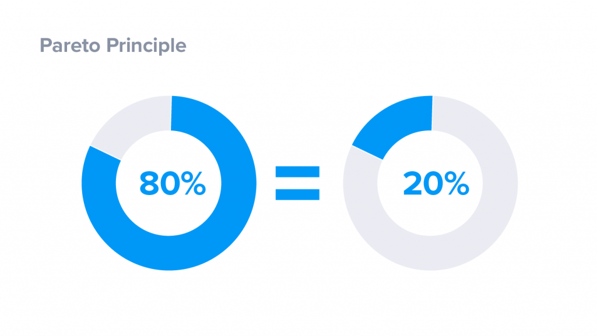

Принцип Парето гласит, что небольшая доля причин, приложенных усилий и вкладываемых средств отвечает за большую долю результатов. Это принцип был сформулирован итальянским экономистом Вильфредо Парето в 1897 году и с тех пор подтверждался количественными исследованиями в самых различных сферах жизни:
20% усилий дают 80% результата
Принцип Парето в сфере тайм-менеджмента может быть сформулирован так: примерно 20% усилий и времени достаточно, чтобы получить 80% результата. Как именно определить, какие усилия достаточно затратить для получения хорошего результата? Представьте, что вы ищите ответы на интересующие вас вопросы в книге. Согласно рассматриваемому принципу, 80% нужной вам информации вы найдете в 20% объема текста. Если вы точно знаете, что именно вас интересует, вы сможете быстро пролистать книгу и внимательно прочитать только отдельные страницы. Таким образом, вы сэкономите 80% своего времени.